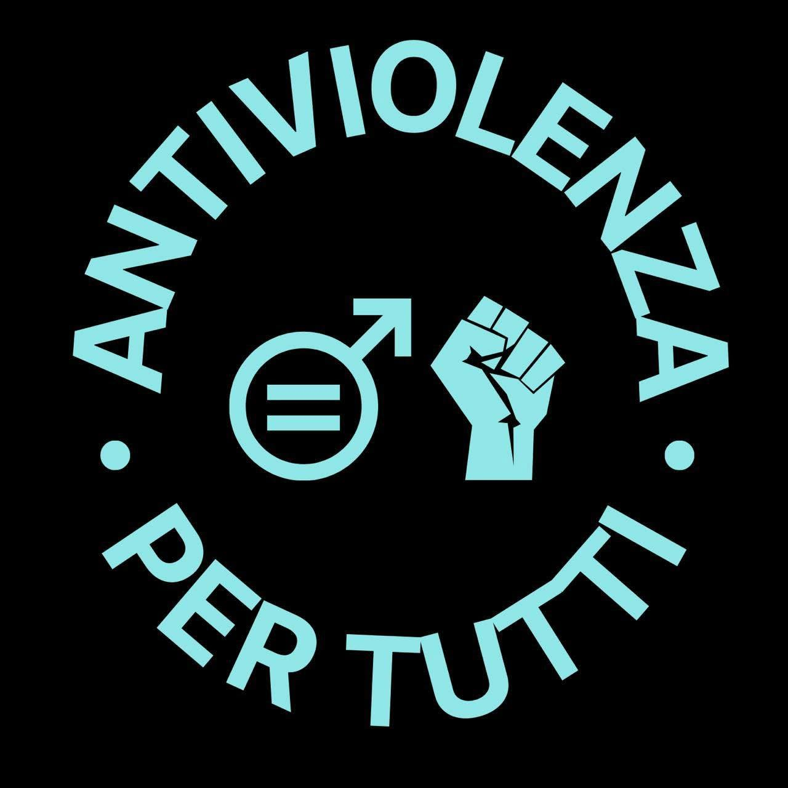

Diritti
I diritti umani come base comune per leggere discriminazioni, violenza e disuguaglianze che colpiscono persone diverse.
Parlo di diritti umani con approccio antisessista, metodo scientifico e un po' di ironia.
Uno spazio di divulgazione dedicato a comprendere il sessismo nelle sue diverse forme, confrontando dati, linguaggi e rappresentazioni senza semplificazioni.
I diritti umani come base comune per leggere discriminazioni, violenza e disuguaglianze che colpiscono persone diverse.
Una prospettiva antisessista orientata alla pari dignità, alla reciprocità e al superamento degli stereotipi di genere.
Fonti, dati e metodo scientifico per distinguere fatti, interpretazioni e narrazioni, mantenendo aperto il confronto.

Un progetto parallelo nato in occasione della manifestazione #AntiviolenzaXTutti del 16 maggio 2025 a Roma. L’iniziativa promuove un approccio alla prevenzione e al contrasto della violenza rivolto a tutte le persone.
Segui il progetto per rimanere aggiornato sui nuovi contenuti.